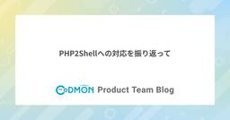
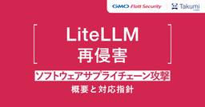
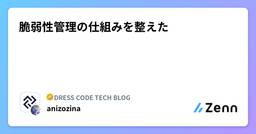
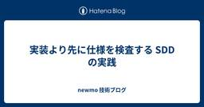
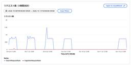
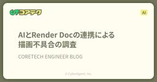
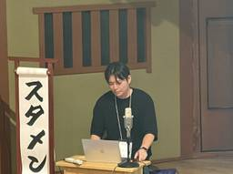
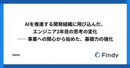
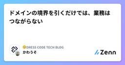

直近1週間の人気フィード
はてなブックマーク数を元に新着優先で並べ替え

PHP 8.5.12の緊急リリースにpixivはどう対応したか 766
766 pixiv inside
pixiv inside
こんにちは、Platform Division Infrastructure Unitのpicopicoです。 2026年10月21日、PHPに深刻な脆弱性（通称PHP2Shell）が見つかり、緊急のセキュリティリリースが予告されました。今回の脆弱性への対応にあたられた皆さま、そして現在も対応を続けている皆さまに、心より敬意を表します。 ピクシブでは影響を受ける可能性のあるサービスを10月21日1
2日前
PHPの重大な脆弱性「php2shell」（CVE-2026-109618、CVE-2026-109619）の概要と対応指針 881 GMO Flatt Security Blog
PHP開発チームは2026年10月21日22時40分頃（日本時間）に重大な脆弱性2件を含む、セキュリティリリースをリリースしました。両件のCVSS v4.0スコアは9.2となり、どちらも一般的な構成において任意コードに繋がるものです。 本脆弱性の発見に関与すると見られる研究者の投稿、及び開示に関与した Wiz 社の記事 にて「php2shell」という名称が用いられています。 本稿では、各公開情報
4日前

PHP2Shellへの対応を振り返って 257 コドモン Product Team Blog
コドモン Product Team Blog
2026年10月21日、PHPの脆弱性「PHP2Shell」への予防措置として、コドモンのサービスを日中に一時停止しました。停止の判断から、修正版を待ちながらの自前ビルドの準備、翌朝の再開までを、反省点も含めて時系列で振り返ります。
1日前

仕組みを理解する動画を、Claude Codeに作らせると便利すぎる 616 株式会社エクスプラザのフィード
最近は動画で説明資料を作っているアプリの仕組みをお客さんに説明するとき、構成図とかHTML・Markdownで、説明するのが一般的かと思いますが最近はjavascriptを用いて、Claudeで動画を生成しやすくなったので、アプリの操作と、その裏で起きている処理を交互に見せる解説動画を作って説明に使っています。めちゃくちゃ便利なので、Claude Code に作らせる指示テンプレートと、動画の作り
4日前

ZOZOTOWNフロントエンドのPR自動レビュー ── AIへの指示が守られない前提で、強制と指示を分ける設計 55 ZOZO TECH BLOG
ZOZO TECH BLOG
はじめに こんにちは。ZOZOTOWN開発本部フロントエンドの菊地（@hiro0218）です。普段はZOZOTOWNのフロントエンドを開発するチームで、機能開発や技術課題の解決に取り組んでいます。 ZOZOTOWNのフロントエンド組織では、Pull Request（PR）を自動でレビューする仕組みを独自に構築しています。Claude Code GitHub Actionsを使った構成です。 PRで
2日前
内製 Background Coding Agent “haro” で拓く未来の開発体験 74 LayerX エンジニアブログ
LayerX バクラク事業部 Platform Engineering 部 Staff Software Engineer の izumin5210 です。 3D アクションゲームを始めたはずが工場自動化要素が入っていたせいで、昼夜を問わず何らかの生産性について考えています。 バクラク事業部 Platform Engineering 部では、社内のプロダクト開発を支援する、クラウド上で動作する C
3日前

AI が書き、レビューし、QA する開発で、私は「監督」の役割を考え始めた 90 LayerX エンジニアブログ
AI が書いたコードを、最近めっきり読まなくなった。 1 日に 13 本くらい PR（Pull Request）が出る昨今の私の開発プロセスでは、全部コードを読んでいたら人間の工程で詰まってしまう。だから、チームのレビューとその後の QA プロセスは残したまま、私はコードを読むのをやめた。 コードを読まなくなってしばらく経ったころ、AI が 6 体がかりでコードをレビューしていた。指摘はどれももっ
4日前

LiteLLMパッケージ 再侵害の概要と対策指針 70 GMO Flatt Security Blog
2026年10月21日、PyPI パッケージ litellm に悪性コードが注入されました。2026年3月に発生した事案とは別の再侵害が発生しています。 注入された悪性コードは、Infostealer機能を持つマルウェアです。なお、PyPIのインストールにおいて、Takumi Guardをご利用の方は3日間の検疫期間が設定されているため、被害は発生していません。 本記事は、弊社が Takumi G
3日前

仕事を進めるだけでは、仕事しか進まない。木こりのジレンマを Claude Code で解いた5ヶ月の記録 244 RAKUS Developers Blog | ラクス エンジニアブログ
朝、森を歩いていた旅人が、木を切っている木こりを見かけました。夕方、同じ道を戻ると、木こりはまだ同じ木を切っています。見ると、ノコギリの刃はぼろぼろに欠けていました。 旅人が声をかけます。「木こりさん、ノコギリの刃を研いだらどうですか」。木こりは答えます。「木を切るのに忙しくて、研いでいる暇なんてないんだよ」。 『7つの習慣』の「刃を研ぐ」の文脈でよく引かれる寓話です。初めて聞いたとき、私は笑えま
5日前

Platform Engineering Kaigi 2026で「Argo CDとAtlantisで実現するインフラ管理のセルフサービス化」というタイトルで発表しました！ 16 ANDPAD Tech Blog
ANDPAD Tech Blog
サービスプラットフォーム部 部長の角井です。 2026年9月26日(土)に開催されたPlatform Engineering Kaigi 2026で、アンドパッドは初めてスポンサーを務め、ブースを出展しました。 私はスポンサーセッションで「Argo CDとAtlantisで実現するインフラ管理のセルフサービス化──小規模SREチームで支えるプラットフォーム」というタイトルで登壇しました。小規模なS
2日前

脆弱性管理の仕組みを整えた 26 DRESS CODE TECH BLOGのフィード
はじめにこんにちは、Dress Code 株式会社でプロダクトエンジニアをやっている津田です。以前、SOC2 Type1 取得に向けてやったことを整理した記事を投稿しました。https://zenn.dev/dress_code/articles/1823b6c22c2534引き続き、プロダクトセキュリティを見ており、社内の協力もあって SOC2 Type2 の継続審査も終えることができました。今
3日前

人はIssueとPRで判断するだけ — 自律AIループで回す開発プロセスの設計 47 RAKUS Developers Blog | ラクス エンジニアブログ
■ 目次 目的は少ない人数でリリースの量を上げること 使う側から見た1件の流れ ready を付けると、トリアージが始まる 仕様書が PR で届く 実装も PR で届き、いつも通りレビューしてマージする 迷わないための工夫 構造: 状態ラベルとループ 人の判断の置き場所 承認ゲートは2つに絞る チェックシートは AI が下書きし、人が確定する 安心して任せられる理由 指示・手順で頼むことと、コード
3日前

セキュアな実装をするために意識したいこと 14 DRESS CODE TECH BLOGのフィード
こんにちは、Dress Code でプロダクトエンジニアをしているてちです！最近、「不正アクセスにより個人情報が流出した可能性があります」というニュースを本当によく見かけます。しかも数万件ではなく、数百万件から数千万件規模のものが続いています。ニュースではどれも「不正アクセス」の一言でまとめられてしまいますが、公表資料を読んでいくと、侵入の入口はかなりバラバラでした。そこで今回は、2025〜202
3日前

Agent Toolkit for AWS で始める Well-Architected Framework Review 12 フューチャー技術ブログ
フューチャー技術ブログ
Agent Toolkit for AWS の aws-well-architected-review スキルの仕様を整理し、公開サンプルに score・quick・full の3モードでレビューを実施して出力を比べます。AWS Well-Architected Agent との違いにも触れます。
3日前

社内最大のRailsアプリのテスト高速化に挑戦した半年 27 inSmartBank
こんにちは！エンジニアのnissyiです。Kaigi on Rails 2026があっという間に終わってしまい、なんとなく寂しさを感じている今日この頃です。 手前味噌ですが、私は今回のKaigi on Railsで「FactoryBotをやめればRSpecは速くなるのか？」という発表をしました。 この発表では、「core-api」というメインリポジトリで挑戦したテスト高速化についてお話をしたのです
4日前
PHP2Shellを狙った攻撃を日本国内でも観測 (IIJ MITFハニーポット) 3 IIJ Engineers Blog
2026年10月20日に予告があり、翌21日23時(日本時間)に詳細と緊急パッチが公開されたPHPの脆弱性PHP2Shellは、PHPの高いシェアと悪用リスクの高さ、そして正式発表までの紆余曲折を含め...
1日前
ラズパイとAIで作ったオレの格安高音質オーディオ環境、控えめにいって最高すぎる〜Raspberry Pi + Easy Effects で自作DSP、音の調整はAIにおまかせ〜 3 SIOS Tech Lab
武井でございます。 ちゃんとした DSP（デジタル信号処理の機材）を買おうとすると、数万円から10万円近くします。DSP とは、スピーカーの音を補正したり、エフェクトをかけたりする機材です。イコライザーやコンプレッサーな ...ラズパイとAIで作ったオレの格安高音質オーディオ環境、控えめにいって最高すぎる〜Raspberry Pi + Easy Effects で自作DSP、音の調整はAIにおまか
2日前

実装より先に仕様を検査する SDD の実践 24 newmo 技術ブログ
newmo 技術ブログ
PRD に書かれていないことに、QA で初めて気づくことがあります。 たとえば「タクシーが迎えに着いた後で配車がキャンセルされたらどうなるか」です。 生成 AI に実装とテストを書かせると、この抜け漏れはもっと見えにくくなります。 AI が抜け漏れを勝手に埋め、テストもそれに合わせて通るからです。 newmo の QA では、この問題に、仕様駆動開発（SDD）の一つのやり方として ESDD（Exe
5日前

AWS開発環境のOpenSearchの使い分け 23
フューチャー技術ブログ
AWSのOpenSearchのManaged ClusterとServerless（NextGen）を実際に開発環境に投入し、Pricing Calculatorでは見えない利用料の様子をまとめました。
4日前

【php2shell】なぜ「memory_limit」のバグに10年以上も誰も気づけなかったのか？PHP特大脆弱性の仕組みを分かりやすく解説 3 サーバーワークスエンジニアブログ
統合運用課 有川です。 2026年10月21日、PHPのコア機能に存在する極めて深刻な脆弱性「php2shell（CVE-2026-109618 / CVE-2026-109619）」（CVSSスコア 9.2 Critical）が公開されました。 Flatt Securityさんの解説記事などを読んで、「一体どういうことなの…？」と衝撃を受けた方も多いのではないでしょうか。（参考：Flatt Se
2日前
Server-Side Kotlin Meetup vol.20 登壇レポート ~ Kotlin + Quarkus を Lambda SnapStart で動かす ~ 19 Nealle Developer's Blog
こんにちは、ソフトウェアエンジニアの宮後（miya10kei）です。 最近、年明けのフルマラソンに向けてランニングの日々を送っています🏃💨 2026年10月14日に開催された「Server-Side Kotlin Meetup vol.20」で登壇させていただきました。 今回も前回に引き続きセッション内容をスライドを抜粋しながら簡単に紹介します。 server-side-kotlin-meetup
6日前

AIとRender Docの連携による描画不具合の調査 11 CORETECH ENGINEER BLOG
こんにちは、サイバーエージェントSGEコア技術本部、グラフィックスチームの清原です。 スマートフォンゲームの開発において、Android端末などの実機のみで起きる描画不具合の調査などは、時間と手間のかかる困難な問題でした。 今回はこの問題調査の効率を大幅に向上させる、RenderDocとClaude Codeとの連携についてご紹介させていただきます。 RenderDocの実機キャプチャとClaud
5日前

ヘルプデスク管理を自前の仕組みからバクラクヘルプデスクに移行した話
14 LayerX エンジニアブログ
LayerX Fintech事業部から、三井物産デジタル・アセットマネジメント（以下、MDM）に出向している hi-se です。 私が所属しているMDMのコーポレートシステム部では、社内のヘルプデスク対応に、日々それなりの時間を使っています。ヘルプデスク対応は、社員が業務を滞りなく進められるかどうかに直結する重要な業務の1つです。 ただ、他にもやるべきことはたくさんあるので、ヘルプデスクに割く時間
6日前

名古屋Ruby会議05のスポンサーLTで登壇しました ― 5分に入らなかった話 3
 stmn tech blog
stmn tech blog
はじめに お久しぶりです！株式会社スタメンのちぇるです。 2026/9/19(土)に大須演芸場で開催された「名古屋Ruby会議05」で、スポンサーLTとして登壇してきました！ ちょうど1年前、僕は「ながらRuby会議01」に聞く側として参加していました（そのときの参加レポート）。その年末の振り返り記事では「来年は自らプロポーザルを提出し、コミュニティへ還元する側に回ることに挑戦したい」と書いていま
3日前
Falconを Ruby アプリケーションのWebサーバーとして使ってみた話（翻訳） 3 TechRacho
概要 原著者の許諾を得て翻訳・公開いたします。 英語記事: Binary Solo | Falcon as a web server for Ruby applications 原文公開日: 2026年07月24日 原著者: Ayush Newatia 日本語タイトルは内容に即したものにしました。 FalconをRubyアプリケーションのWebサーバーとして使ってみた話（翻訳） 前回の記事では、C
3日前

AIエージェント開発の半自動化 - ハーネスエンジニアリングによるClaude Code運用実践 3 Insight Edge Tech Blog
Insight Edge Tech Blog
はじめに こんにちは、Insight Edgeの小林まさみつです。 ※ 本記事はPoC案件での技術検証の内容であり、商用環境での実用性は今後の検証課題です Claude Codeのようなコーディングエージェントに実装を任せる場面は珍しくなくなりました。一方で、実装を任せたあとの「意図どおりに動いているかを確認する」「レビューする」「マージして後片付けをする」といった作業は、人の手に残りがちです。
4日前

Railsの「1対1」をGraphQLにも ― 迷わないgraphql-rubyのディレクトリ設計 4 PLEX Product Team Blog
PLEX Product Team Blog
はじめに こんにちは、プレックスでサクミルの開発をしている石見です。 サクミルは、建設業向けのバーティカルSaaSです。バックエンドはRuby on RailsとGraphQL（graphql-ruby）、フロントエンドはNext.jsで開発しています。 本記事では、RailsとGraphQLをどのような考えで採用し、graphql-rubyをどのように設計しているかを紹介します。 graphql
4日前

AIを推進する開発組織に飛び込んだ、エンジニア2年目の思考の変化 ── 事業への関心から始めた、基礎力の強化 5 Findy Tech Blog
Findy Tech Blog
こんにちは。ファインディ株式会社でFindy Team+の開発をしているkameです。 経歴としては、異業種から転職して現在エンジニア2年目です。ファインディには2026年5月に入社し、5ヶ月ほどが経過しました。 ファインディでは設計、実装、レビューなど各プロセスにおいてAIを活用しています。 このような経歴、環境下での私自身の思考の変化や、取り組んできたことに関して紹介します。 入社直後に感じた
6日前

ドメインの境界を引くだけでは、業務はつながらない 4 DRESS CODE TECH BLOGのフィード
はじめにDress Code 株式会社のかわうそです。DDDの設計を考えていると、Bounded Contextをどこで分けるか、Aggregateに何を含めるかに意識が向きます。業務の言葉を掘り下げ、守るべきルールをモデルにする。この設計には時間をかけるべきだと思います。ただ、そこで各ドメインのモデルができても、プロダクト全体の設計が済んだとは言えません。別々のモデルが同じ人物を指すこともあれば
6日前

AI時代、配布するPythonコードをどう守るか: 難読化の実験と判断軸 3 PKSHAテックブログ のフィード
はじめにこんにちは。PKSHA Technology でソフトウェアエンジニアをしている山本です。2026 年 8 月 22 日に広島で開催された PyCon JP 2026 にて、「AI 時代、配布する Python コードをどう守るか: 難読化の実験と判断軸」というタイトルで発表しました。本記事は、その発表内容をもとに、発表時間の都合で触れられなかった内容も加えて文章にまとめ直したものです。発
5日前